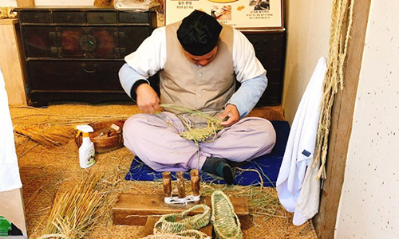

본문콘텐츠영역
생활문화 체험
선조들의 삶을 경험할 수 있는 생생한 전통체험
생활문화
-
- 승마체험 (유료)
- 성인:5,000원(청소년 포함),
아동:4,000원(36개월~초등학생),
동승:7,000원(48개월 미만+보호자)
-
- 천연염색체험 (유료)
- 4,000원
운영기간 : 4월 ~ 11월
-
- 전통생활 체험
- - 농사풍경: 연자방아, 디딜방아, 맷돌돌리기, 키 체험하기, 절구 찧기,
지게 매어보기 등
- 생활풍경: 다듬이질하기, 괴나리봇짐 매기, 똥장군져보기,
애기구덕 져보기, 사판쓰기 등
- 관아풍경: 관아 형구체험, 옥사 체험 등
-
- 전통생활 시연
- - 대나무발 만들기, 둥구미짜기, 멍석짜기, 똬리틀기, 가마니짜기,
누에실뽑기, 물레돌리기
- 운영기간 : 4월~11월
-
- 공동생활 시연
- - 품앗이 시연(생활물품제작 시연 외 주제별 공동작업),
세시 및 계절별 마을풍속 재현
- 주말, 공휴일 운영
민속놀이
-
- 그네뛰기 장소 : 그네터
- 한 사람 또는 두 사람이 그네에 올라타고 앞뒤로 왔다갔다하는 놀이로, 조선시대는 물론 현대에도 사랑받는 대표적인 전통민속놀이입니다. 특히 단옷날에는 명절풍속 중 하나로 남성들의 씨름과 더불어 대표적인 여성들의 놀이로서 성행했습니다.
-
- 윷놀이 장소 : 관아앞, 그네터
- 4개의 윷가락을 던져 엎어지고 뒤집어진 상태에 따라 윷판 위의 말을 움직여 승부를 겨루는 놀이로, 남녀노소 누구나 쉽게 즐길 수 있어 사랑받는 전통 민속놀이입니다. 윷놀이는 정초에 즐기는 오락 이기도 하지만, 농가에서는 던져진 윷가락을 통해 새해농사의 풍흉을 점치기도 합니다.
-
- 투호놀이 장소 : 관아앞, 그네터
- 투호는 옛날 궁중이나 양반집에서 즐겨했던 놀이로 동서로 편을 갈라 항아리 속에 화살을 던지는 놀이 입니다. 항아리 속에 화살을 많이 넣은 편이 이기는 방식으로, 화살이 적중하면 춤추며 기뻐하고, 하나도 넣지 못하면 얼굴과 이마에 먹칠을 해서 벌을 주기도 했습니다.
전통공예 체험
전통방식을 고집하는 장인정신
전통공예
-

- 죽기공방
- 죽기 공방에서는 반짇고리, 죽부인, 소쿠리 등 일상생활 도구를 비롯해 가구, 필기구, 놀이도구 등 장인의 손길이 느껴지는 다양한 대나무 생활용품을 만날 수 있습니다. (죽기 공예 시연)
-

- 목기공방
- 나무 자체의 아름다움과 멋을 느낄 수 있는 목기 공방에서는 홍두깨, 소반, 다듬이 방망이 등 일반 생활용품 제작과정을 직접 볼 수 있습니다. (대패질 체험)
-
- 옹기공방
- 선조들의 지혜를 엿볼 수 있는 살아있는 그릇, 옹기의 제작과정을 실제로 보고 체험할 수 있습니다. 옹기공방 제품들은 전통방식을 살려 질그릇에 유약을 입혀 정성스레 가마에 구워 만듭니다. (옹기만들기)
-

- 부채공방
- 한국민속촌의 전통부채는 형태가 둥근 방구부채로 나무, 한지 등 전통재료를 이용해 만들고 있습니다.선조들의 멋과 풍류를 느낄 수 있는 부채를 직접 만들어보는 체험도 진행됩니다.(부채만들기)
-
- 유기공방
- 최상품의 방짜를 제작하는 유기공방은 한국민속촌의 자랑입니다. 장인들의 땀과 정성이 담겨있는 유기공방의 놋수저 세트는 외국 분들에게도 인기입니다. (유기 공예 시연)
-

- 대장간
- 한국민속촌 대장간에서는 농기구와 연장 및 그 밖의 생활도구를 전통방식 그대로 제작합니다. 시우쇠를 단련해 철기를 만드는 모습과 함께 제품도 직접 구매할 수 있습니다. (철기 제작 시연)
-
- 낙화공방
- 낙화공방에서는 인두를 달궈 나무판과 종이에 그림이나 글씨를 쓰는 인두화 제작과정과 함께 다양한 인두화를 감상할 수 있습니다.
-
- 탈공방
- 탈 공방에서는 오동나무와 오리나무를 칼로 깎아 제작하는 나무 탈 공예를 선보입니다. 인간의 다양한 성격과 특징을 섬세한 조각공예로 표현해내는 장인의 손길을 느낄 수 있습니다. (탈 조각 시연)
-
- 염색공방
- 염색공방에서는 천연재료인 치자와 소목을 끓인 물로 정성 들여 무명천에 물을 들입니다. 특히 염색공방에서 체험 가능한 ‘손수건 천연염색 체험’은 언제나 인기 있는 체험입니다.
-

- 악기공방
- 대금 명연주자인 악기공방의 장인에게 단소 만들기와 연주하기, 물피리 불기를 배울 수 있습니다.
-

- 짚신공방
- 짚신공방에서는 볏짚을 능숙하게 꼬아 짚신을 삼는 과정을 재현하고 있습니다. 일제시대부터 애용되었던 짚신을 전통방식 그대로 손으로 직접 꼬아 만드는 장인의 모습을 만날 수 있습니다.(짚신삼기 시연 / 짚신 신어보기 체험)